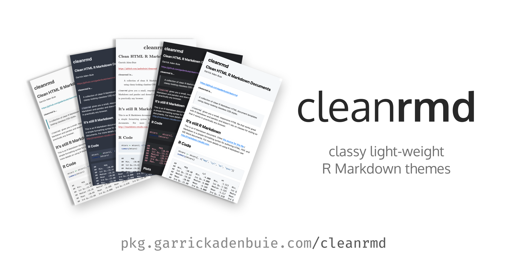
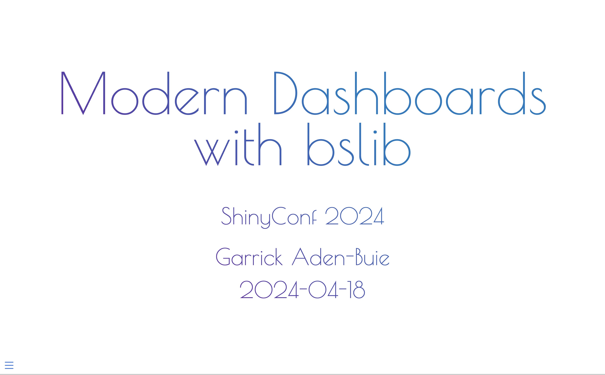
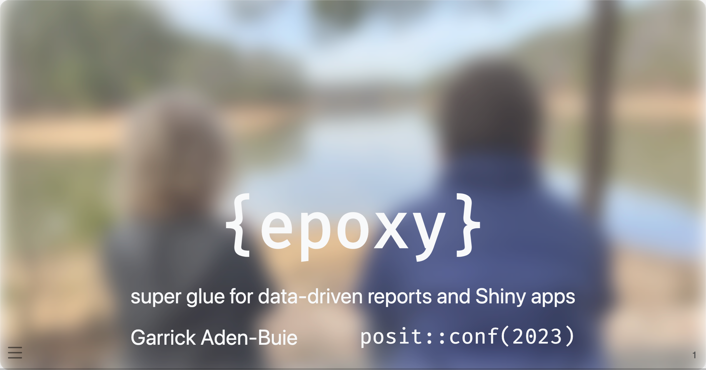
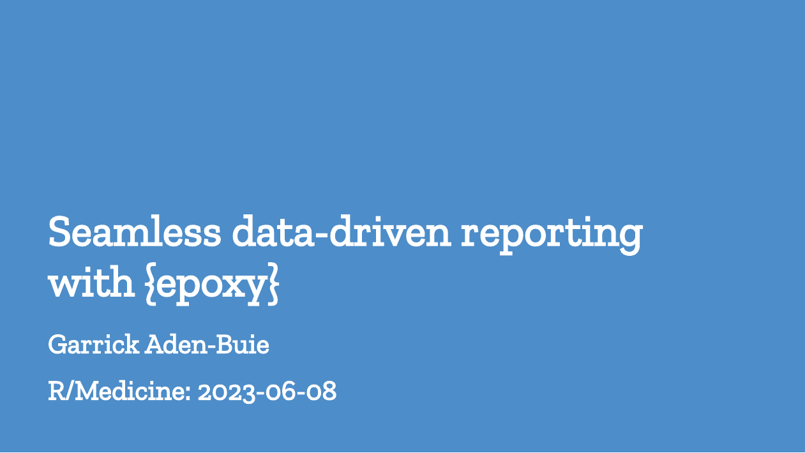
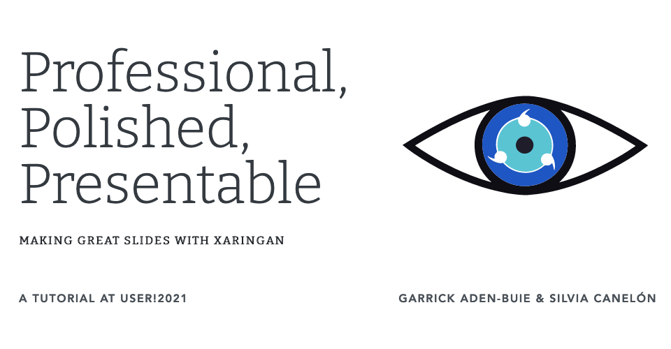
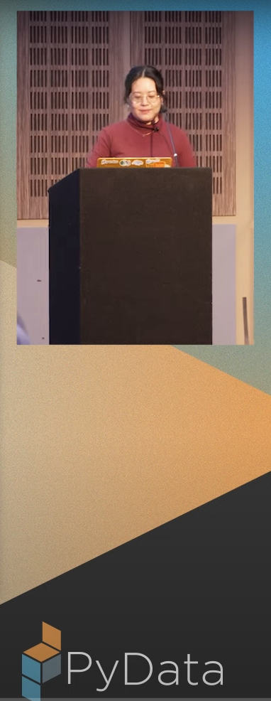

I’m a data technologist.
TBD


bslib is the new shinydashboard! Learn why you should choose blisb for your next Shiny app or dashboard.

Super glue for data-driven reports and Shiny apps.

{epoxy} is a new R package that allows report authors to seamlessly blend prose and data in markdown, HTML, and LaTeX reports.

A useR!2021 tutorial about making great slides with xaringan.
Make stylish slides with {xaringanthemer} and a little bit of CSS.
A brief introduction to the {xaringan} package and how you can make your slides look great with {xaringanthemer} and stand out with {xaringanExtra}.
An incomplete history of the literate programming origins of R Markdown. Plus some cool things I’m tinkering with: {epoxy} and {shinyComponents}.
Making slides with xaringan is a great way to learn more about CSS and web development.
Scale high-quality research data provisioning with R packages package.
